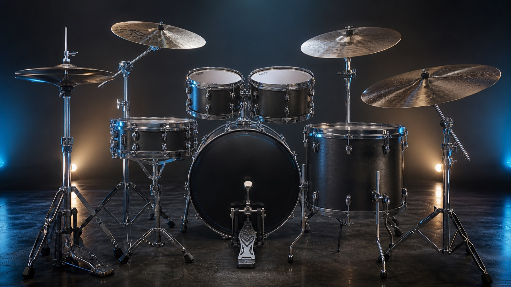
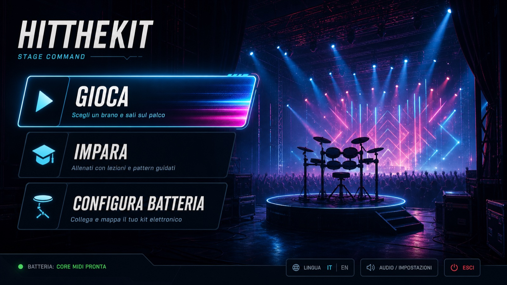

Timing deterministico
Il motore di hit-matching vive in una libreria .NET indipendente da Unity, con test automatici sulle finestre di giudizio.
v0.5.x · PRE-RELEASE OPEN SOURCE
Il rhythm game costruito per chi vuole imparare davvero a suonare: timing preciso, lezioni progressive e la tua batteria elettronica al centro dell’esperienza.

GAMEPLAY REALE
Dal menu alla configurazione, dalla scelta della lezione alla highway: una cattura reale dell’app con contenuti originali.
01 / 07
COME FUNZIONA
Ogni colpo passa dallo stesso motore deterministico, che tu stia usando la tastiera o un vero kit MIDI.
Il motore di hit-matching vive in una libreria .NET indipendente da Unity, con test automatici sulle finestre di giudizio.
Configurazione guidata del kit, feedback visivo sul pezzo richiesto e fallback da tastiera sempre disponibile.
Lezioni progressive con obiettivi, velocità di studio e valutazioni trasparenti: niente difficoltà artificiale.
02 / 07
AMBIENTI
Cambia il linguaggio visivo senza alterare timing, note o punteggio.
THEME 01
THEME 02
THEME 03

PERCORSO GUIDATO
Il primo semestre è già giocabile: da una pulsazione di grancassa a 64 BPM fino a un groove completo in sedicesimi. Il secondo resta visibile come programma, senza fingere di valutare ciò che il motore non supporta ancora.
04 / 07
LIBRERIA
Il repository non distribuisce musica commerciale: include soltanto una demo originale e il confine per i contenuti posseduti dal giocatore.
INCLUSO
LA TUA MUSICA
05 / 07
ROADMAP
Lo stato pubblico distingue ciò che è giocabile da ciò che è ancora in sviluppo.
SOURCE PREVIEW
La prima pubblicazione contiene soltanto sorgenti e sito. Non è ancora disponibile un binario Unity pubblico approvato; sviluppatori e tester possono seguire la procedura di build documentata.
LICENZA
Il codice originale del progetto è distribuito con licenza MPL-2.0. Le modifiche ai file coperti restano open source, mentre Unity e le dipendenze mantengono i propri termini.
FAQ
No. La tastiera è sempre disponibile; un kit MIDI rende però l’esperienza più vicina allo strumento reale.
Non ancora. Il backend di produzione usa CoreMIDI su macOS; Windows e Linux supportano oggi il gameplay da tastiera.
No. Il repository contiene solo musica originale rights-clean e un esempio per i contenuti locali del giocatore.
No. I binari macOS e Windows restano soggetti a firma, test e verifica dell'esatto candidato prima della pubblicazione.